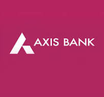

Axis Bank

History
The bank was founded on 3 December 1993 as UTI Bank, opening its registered office in Ahmedabad and a corporate office in Mumbai.[11] The bank was promoted jointly by the Administrator of the Unit Trust of India (UTI),[12] Life Insurance Corporation of India (LIC), General Insurance Corporation, National Insurance Company, The New India Assurance Company, The Oriental Insurance Corporation and United India Insurance Company. The first branch was inaugurated on 2 April 1994 in Ahmedabad by Manmohan Singh, then finance minister of India.[13]
In 2001 UTI Bank agreed to merge with Global Trust Bank, but the Reserve Bank of India (RBI) withheld approval and the merger did not take place. In 2004, the RBI put Global Trust under moratorium and supervised its merger with Oriental Bank of Commerce. The following year, UTI bank was listed on the London Stock Exchange.[14] In the year 2006, UTI Bank opened its first overseas branch in Singapore. The same year it opened an office in Shanghai, China. In 2007, it opened a branch in the Dubai International Financial Centre and branches in Hong Kong.[15]
On 30 July 2007, UTI Bank changed its name to Axis Bank.[16]
In 2009, Shikha Sharma was appointed as the MD and CEO of Axis Bank.[17]
In 2013, Axis Bank's subsidiary, Axis Bank UK commenced banking operations.[18]
The Indian government intends to sell a 20.7% stake in Axis Bank in February 2014 for 57 billion rupees, equivalent to 925 million dollars.[19]
On 1 January 2019, Amitabh Chaudhry took over as MD and CEO.[20]
In year 2021, the Bank had reduced its stake in Yes Bank from 2.39 per cent to 1.96 per cent.[21]